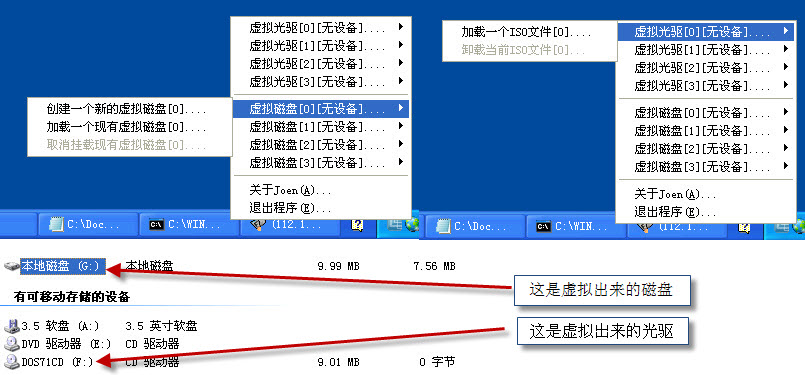

虚拟磁盘光驱(FileDisk)
文章目录
这几天总算把这个开源的FileDisk给分析完了. 分析完以后收获不少, 有些经验了. 其实对于前面写的那个中断无法和R3进行交互的问题, 我们可以创建Dpc例程的, 或者专门用一个线程来做这件事情也可以. 扯远了, 还是看看这个FileDisk吧.
其实搞一个虚拟磁盘和虚拟光驱的东西现在看来并不是很困难了, 基本上主要是集中在DefineDosDevice函数上面, 原来的时候不知道这号函数就可以定义一个符号链接, 链接到一个设备上面, 当然现在知道了, 在FileDisk里面就是这样做的, 调用了DefineDosDevice函数以后就会在浏览器中添加一个操盘设备, 驱动这边基本上也没有做很多事情, 就是把读取或者,其他的各种请求发送给更下层的设备, 对到一个文件上面, 很好. 很强大.
当然分析FileDisk还是给我带来了不小的长进, 现在基本知道了一个磁盘设备一般要处理多少中Irp.. 并且这些请求都要按照什么套路进行处理. 有些收获, 看人家写的开源工程还是有很多长进的, 当然还是没有自己写来长进大啊. 在看完了FileDisk以后我准备小改一下, 不过不知道改什么, 基本上虚拟磁盘和虚拟光驱都已经就是这个套路, 做的很到位了,
所以我打算修改R3这边, 因为这个开源工程是个控制台的程序, 我想如果在R3这边改动一下, 基本上也就理解了R0这边为什么这些消息要这样处理, 或者这些消息是以什么顺序开始进行的. 等等. 所以我把R3这边由控制台改成了图形化的界面, 并且R0这边我跟了好几天, 确实又有些收获..
不过到现在我还是没有搞明白, 那点关于安全的代码, 听杀哥说是让驱动去模拟客户端执行一点东西? 到底是怎么回事? 看来只有抽个时间好好的看下Windows关于安全方面的书籍才行. 目前还是先放放.
因为是修改自开源的工程, 所以这个程序基本是可以作为日常生活使用的, 基本是没有什么Bug的, 这边如果有想分析FileDisk源码的人有福了, 呵呵我对这个驱动和R3这边的代码都加了非常多的注释, 基本每隔一个语句段我就说了下什么用处, 当然安全部分那点还是没有搞明白. 我倒.. 差不多就这样吧..
这边是截图和源码的下载地址, 因为代码比较多了, 我这边就不贴代码了.. 自己下载回去看. 还有一个值得说的地方就是关于makefile. Windows上开发的人基本上不用这个东西了, 不过我对这个玩意确实情有独钟. 里面已经有说明, 说了如何配置makefile进行编译, 打开makefile看看就知道了..
http://www.joenchen.com/JoenTools/FileDisk.rar

文章作者 忆杰
上次更新 2011-12-03